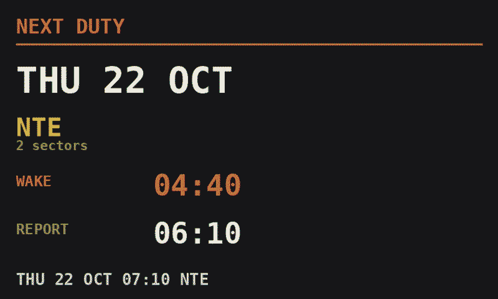

The wall answers the household. This page is for you: what happens when crewing change their mind, what time to wake, and how a commute fits in.
Ident can show your current flight, your estimated arrival time, and even what time you'll arrive home based on traffic conditions. It shows your next duty, so your loved ones can always see how much time they have with you. Ident uses live data from Google Maps for estimating commute time, and AeroDataBox or Flightradar24 for an up-to-date flight time.
The board re-reads your roster regularly. When it moves, it moves.
It's on the wall before you've finished packing. No group chat, no relay.
Landing and home times slide with the day. Nobody's working off this morning's plan.
Days off and early starts show days ahead — the rest of the family can plan without asking.
Airborne, turnaround, or already driving. No worrying about whether you can talk.
Report time and where you're going. The two things worth knowing before lights out.
Big destination, plain times. Old enough to read a clock is old enough to work out when Mum or Dad lands.
If you tell Ident how long you take to get ready, Ident gives you an alarm time to set. Ninety minutes before report, or whatever your morning actually takes. When crewing move your report time, the wake time moves with it. Optionally counts the journey to report as well — so if you need to get to your base before day 1, Ident accounts for the extra commute time.
Press the button on the frame and the next duty comes up: the date, where you're going, what time to be awake and what time to report. On a day off it's already there.

The next-duty card, with wake time and report time.
Ident makes your planning a little easier.
Living in Amsterdam, based at Gatwick? Add the 05:00 AMS–LGW and Ident looks up the route and times itself. Two boxes, once.
The board follows you out of Amsterdam, then hands over to the roster duty when you report. At home they see one continuous day, not a gap.
Deadheading, a night before at a crashpad, the flight home on leave. If it has a flight number, it can go on the board.
Ten minutes from the crashpad mid-block; a two-hour flight home after the last sector. Set both, and the home time is right on the day it matters.
Everything is set from your phone: the style, the lettering, your commute, the battery. Add it to your home screen once and it opens full screen with its own icon — no App Store, nothing to update.